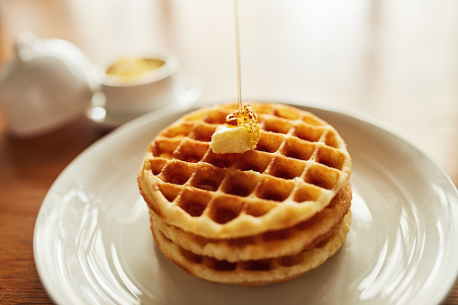

Chicken and Cheddar Waffles
Chicken and Cheddar Waffles

Description
If life is all about balance, what better dish than fried chicken and waffles? A little sweet, a little savory. Try it out!
Ingredients
- 2-3 lb boneless, skinless chicken thighs
- 2 c all purpose flour
- 1/2 c cornstarch
- 1.5 tbsp garlic powder
- 1.5 tbsp paprika
- 3 tsp cayenne
- 2 tbsp salt
- 1 large egg, beaten
- 1.5 c buttermilk
- 8 c vegetable oil, for frying
- 6 waffles
- 1 c shredded cheddar cheese
- 2 tbsp chives
- maple syrup, for serving
Steps
- Salt chicken and place in the refrigerator for 6 hours or overnight.
- When the chicken is ready, mix flour, cornstarch and spices in a medium bowl and set aside for dredging.
- Dredge all the chicken pieces in the flour mixture and place on a rack.
- Pour 4 tbsp of the buttermilk mixture into the flour mixture and mix to make chunky pieces.
- Dredge the chicken in the buttermilk. Then, pat the buttermilk-flour mixture onto each chicken piece - this is how you get the craggly pieces!
- Place in the refrigerator for at least 30 minutes or up to 12 hours.
- While the chicken is chilling, prepare the waffles by making your waffle batter according to the box instructions, adding 1 c of cheddar and 2 tbsp of chopped chives. Stir well to combine.
- Make your waffles according to the waffle maker instructions; place in a warm oven to keep hot.
- While making your waffles, start to heat the oil for frying until it reaches a 350 degrees (use a thermometer!)
- Fry the chicken pieces until deep golden brown about 5-8 minutes, turning the pieces frequently. Transfer to a wire rack set over paper towels to drain.
- Monitor the heat while frying to keep it at 350 consistently.
- When the chicken comes out of the fry, toss salt over it. Serve hot with warm waffles and maple syrup, plus chives for garnish.